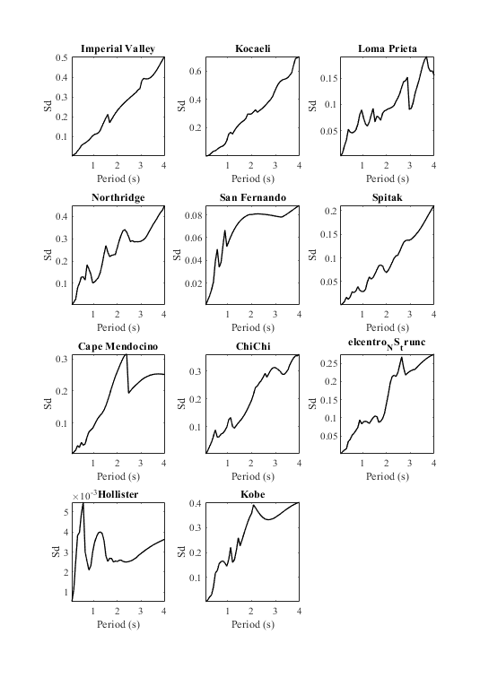
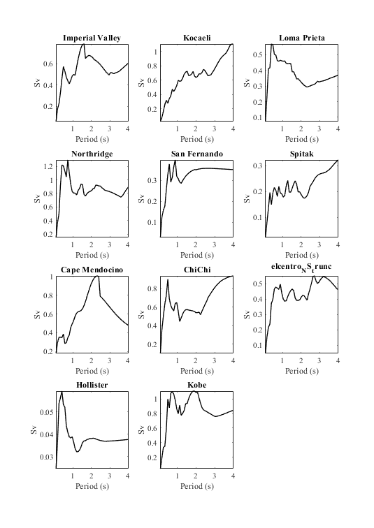
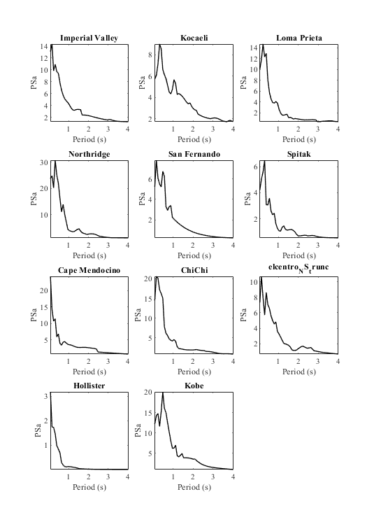
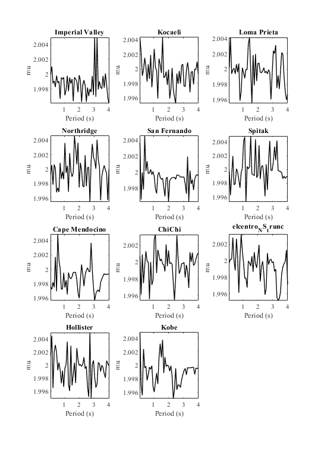
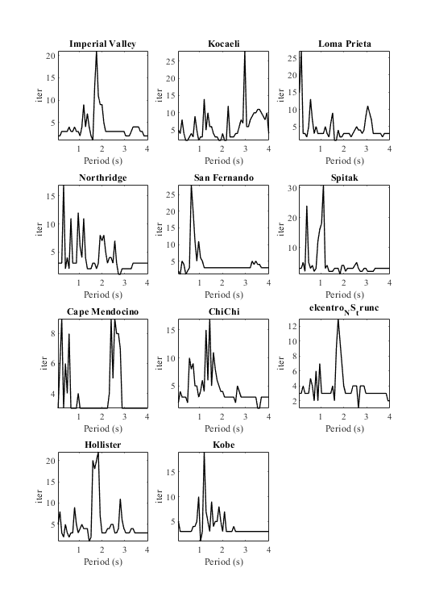

example Constant ductility response spectra
Generate the constant ductility response spectra and associated results of an earthquake suite using OpenSeismoMatlab.
Contents
Input
earthquake motions
eqmotions={'Imperial Valley'; % Imperial valley 1979
'Kocaeli';
'Loma Prieta';
'Northridge';
'San Fernando';
'Spitak';
'Cape Mendocino';
'ChiChi';
'elcentro_NS_trunc'; % Imperial valley 1940
'Hollister';
'Kobe'};
Set the eigenperiod range for which the response spectra will be calculated.
Tspectra=(0.08:0.08:4)';
Set critical damping ratio of the response spectra to be calculated.
ksi=0.05;
Set the target ductility (not used here)
mu=2;
Set the postyield stiffness factor for each earthquake
p=[0.02;0.01;0.02;0.01;0.01;0.01;0.02;0.01;0.01;0.01;0.01];
Extract nonlinear response spectra
sw='cdrs';
Calculation
Initialize CDRS
CDRS=cell(numel(eqmotions),1); % Calculation of peak values for i=1:numel(eqmotions) % earthquake data=load([eqmotions{i},'.dat']); t=data(:,1); dt=t(2)-t(1); xgtt=data(:,2); S=OpenSeismoMatlab(dt,xgtt,sw,Tspectra,ksi,mu,p(i)); CDRS{i}=[S.Period,S.CDSd,S.CDSv,S.CDPSa,S.fyK,S.muK,S.iterK]; end
Output
Plot constant ductility spectral displacement
Fig1 = figure('units', 'centimeters', 'Position', [0,0, 20/sqrt(2), 20]); % Scan all subplots for i=1:numel(eqmotions) subplot(4,3,i) plot(CDRS{i}(:,1),CDRS{i}(:,2),'k','LineWidth',1); set(gca,'FontName','Times New Roman') title(eqmotions{i},'FontName','Times New Roman') ylabel('Sd','FontName','Times New Roman') xlabel('Period (s)','FontName','Times New Roman') axis tight end drawnow; pause(0.1)
Plot constant ductility spectral velocity
Fig2 = figure('units', 'centimeters', 'Position', [0,0, 20/sqrt(2), 20]); % Scan all subplots for i=1:numel(eqmotions) subplot(4,3,i) plot(CDRS{i}(:,1),CDRS{i}(:,3),'k','LineWidth',1); set(gca,'FontName','Times New Roman') title(eqmotions{i},'FontName','Times New Roman') ylabel('Sv','FontName','Times New Roman') xlabel('Period (s)','FontName','Times New Roman') axis tight end drawnow; pause(0.1)
Plot constant ductility spectral acceleration
Fig3 = figure('units', 'centimeters', 'Position', [0,0, 20/sqrt(2), 20]); % Scan all subplots for i=1:numel(eqmotions) subplot(4,3,i) plot(CDRS{i}(:,1),CDRS{i}(:,4),'k','LineWidth',1); set(gca,'FontName','Times New Roman') title(eqmotions{i},'FontName','Times New Roman') ylabel('PSa','FontName','Times New Roman') xlabel('Period (s)','FontName','Times New Roman') axis tight end drawnow; pause(0.1)
Plot constant ductility spectral yield limit
Fig4 = figure('units', 'centimeters', 'Position', [0,0, 20/sqrt(2), 20]); % Scan all subplots for i=1:numel(eqmotions) subplot(4,3,i) plot(CDRS{i}(:,1),CDRS{i}(:,5),'k','LineWidth',1); set(gca,'FontName','Times New Roman') title(eqmotions{i},'FontName','Times New Roman') ylabel('fy','FontName','Times New Roman') xlabel('Period (s)','FontName','Times New Roman') axis tight end drawnow; pause(0.1)

Plot constant ductility spectral achieved ductility
Fig5 = figure('units', 'centimeters', 'Position', [0,0, 20/sqrt(2), 20]); % Scan all subplots for i=1:numel(eqmotions) subplot(4,3,i) plot(CDRS{i}(:,1),CDRS{i}(:,6),'k','LineWidth',1); set(gca,'FontName','Times New Roman') title(eqmotions{i},'FontName','Times New Roman') ylabel('mu','FontName','Times New Roman') xlabel('Period (s)','FontName','Times New Roman') axis tight end drawnow; pause(0.1)
Plot constant ductility spectral number of iterations needed for convergence
Fig6 = figure('units', 'centimeters', 'Position', [0,0, 20/sqrt(2), 20]); % Scan all subplots for i=1:numel(eqmotions) subplot(4,3,i) plot(CDRS{i}(:,1),CDRS{i}(:,7),'k','LineWidth',1); set(gca,'FontName','Times New Roman') title(eqmotions{i},'FontName','Times New Roman') ylabel('iter','FontName','Times New Roman') xlabel('Period (s)','FontName','Times New Roman') axis tight end drawnow; pause(0.1)
Copyright
Copyright (c) 2018-2023 by George Papazafeiropoulos
- Major, Infrastructure Engineer, Hellenic Air Force
- Civil Engineer, M.Sc., Ph.D.
- Email: gpapazafeiropoulos@yahoo.gr